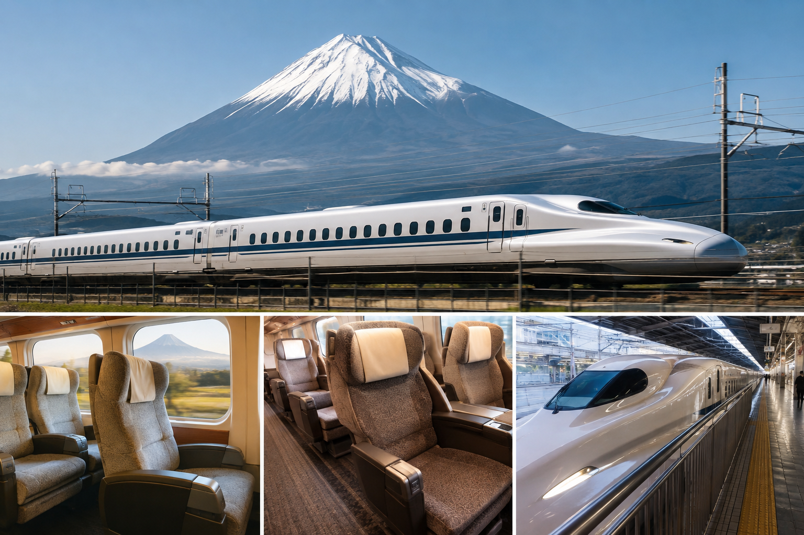
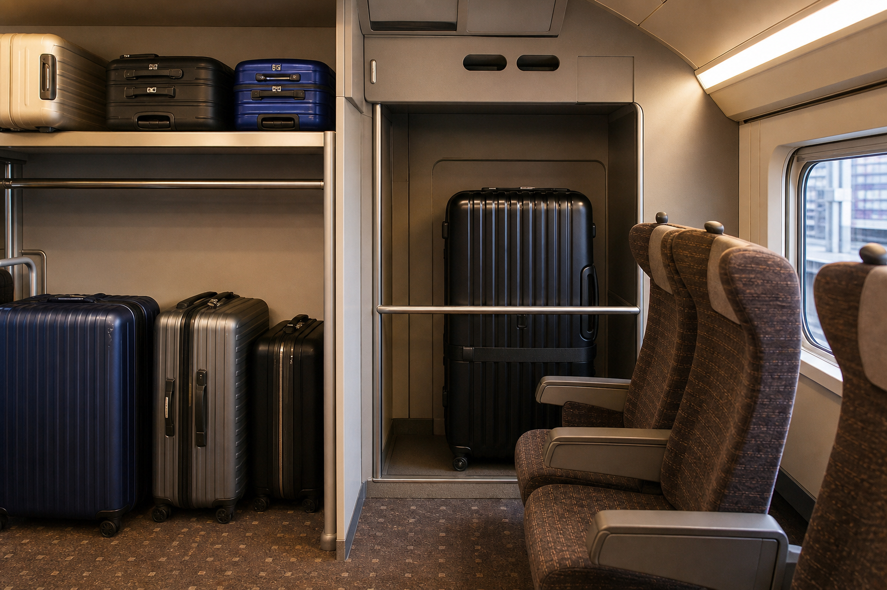
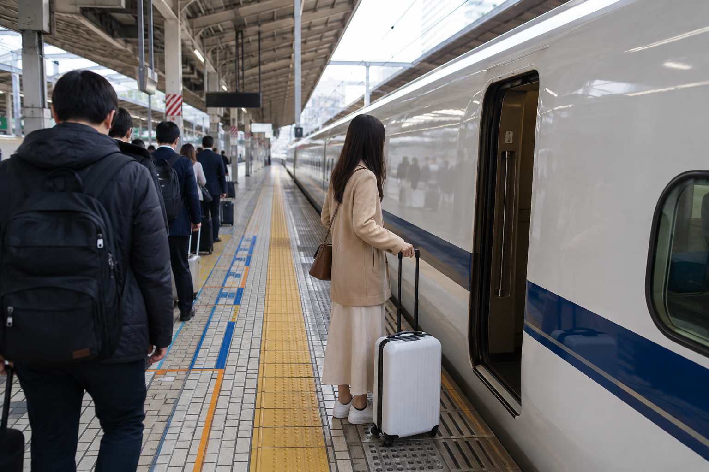

Shinkansen Guide: How to Use Japan's Bullet Trains
Using the Shinkansen for the first time can feel more complicated than taking a normal train in Japan. You may see several train names, different seat types, separate ticket gates, reserved and non-reserved cars, luggage rules, and more than one way to buy a ticket. Once you understand the basic process, however, riding Japan's bullet trains is straightforward.
For many first-time visitors, the Shinkansen is the easiest way to travel between major cities such as Tokyo, Kyoto, Osaka, Hiroshima, Kanazawa, and other destinations connected to the high-speed rail network. It saves you from airport transfers on many routes and usually takes you from one major city station to another.
This guide explains the process from a first-time traveler's point of view: which Shinkansen to choose, how tickets work, whether you need a reserved seat, where to buy tickets, how to find your train, what to do with luggage, and how to board without stress.
Shinkansen at a Glance

| Question | Simple Answer |
|---|---|
| What is it? | Japan's high-speed rail network |
| Best for | Long-distance travel between major cities |
| Do you need a special ticket? | Yes |
| Can you reserve seats? | Yes |
| Are non-reserved seats available? | On many services, but not all |
| Can you take luggage? | Yes, subject to baggage rules |
| Can you eat onboard? | Yes on suitable long-distance services |
| Can you use an IC card alone? | Not like a normal local train unless linked to a compatible Shinkansen booking |
| Does the JR Pass cover it? | Many services, with important conditions |
What Is the Shinkansen?
The Shinkansen is Japan's high-speed railway network.
It is commonly called the bullet train.
Rather than being one single railway line, the Shinkansen consists of several routes connecting different parts of Japan.
First-time visitors commonly encounter routes such as:
- ✓Tokaido Shinkansen
- ✓Sanyo Shinkansen
- ✓Kyushu Shinkansen
- ✓Tohoku Shinkansen
- ✓Hokuriku Shinkansen
- ✓Joetsu Shinkansen
- ✓Hokkaido Shinkansen
You do not need to memorize the whole network.
Learn only the Shinkansen lines used by your itinerary.
Which Shinkansen Route Will Most First-Time Visitors Use?
For a classic first Japan trip, the Tokaido Shinkansen is usually the most important.
It connects major stops including:
Tokyo → Shinagawa → Nagoya → Kyoto → Shin-Osaka
If your trip continues west, the Sanyo Shinkansen connects Shin-Osaka with destinations including Hiroshima and Hakata.
That makes routes such as:
Tokyo → Kyoto
Tokyo → Osaka
Kyoto/Osaka → Hiroshima
easy to combine by high-speed rail.
Shinkansen vs Normal Trains
Do not treat the Shinkansen like an ordinary subway or commuter train.
A normal city journey may work like this:
Tap IC card → board → tap out
A Shinkansen trip can involve:
- ✓Basic fare
- ✓Shinkansen limited express fare
- ✓Seat type
- ✓Reservation
- ✓Specific train
- ✓Specific car
- ✓Specific seat
Booking services may combine these elements into one purchase, so you do not always see them as separate tickets.
The main point is that Shinkansen travel requires more planning than a normal local train ride.
Tokaido Shinkansen: Nozomi, Hikari and Kodama
First-time visitors traveling between Tokyo, Kyoto, and Osaka will often see three train names:
Nozomi
Hikari
Kodama
They use the same general Tokaido Shinkansen corridor but stop at different numbers of stations.
Nozomi
Nozomi is the fastest option on the Tokaido Shinkansen for travel between the major cities.
It makes fewer stops.
For a traveler going:
Tokyo → Kyoto
or
Tokyo → Shin-Osaka
Nozomi is often the most convenient choice when buying normal individual tickets.
There are also many Nozomi departures on this busy route.
Hikari
Hikari stops at more stations than Nozomi but fewer than Kodama.
It is still a fast long-distance service.
Hikari is especially relevant to some Japan Rail Pass users because eligible Hikari journeys are included with the nationwide pass, while normal Nozomi use has different JR Pass rules.
The full pass calculation belongs in Japan Rail Pass: Is the JR Pass Worth It?
Kodama
Kodama stops at every Shinkansen station along its route.
That makes it slower for long journeys such as Tokyo to Kyoto.
Kodama can still be useful if:
- ✓Your destination is a smaller Shinkansen station
- ✓A discounted ticket fits your route
- ✓You are not in a rush
For most first-time travelers moving between the largest cities, Nozomi or Hikari will usually make more sense.
Which One Should You Choose?
If you are buying individual tickets and traveling between major Tokaido cities, I would normally start by comparing Nozomi options.
If you have a JR Pass and do not want to pay the additional Nozomi supplement, check eligible Hikari services.
Use Kodama when your station or fare makes it the better choice.
Do not choose based only on the train name.
Check:
- ✓Departure time
- ✓Arrival time
- ✓Stops
- ✓Seat availability
- ✓Ticket rules
- ✓Price
Other Shinkansen Train Names
Once you travel beyond Tokyo, Kyoto, and Osaka, you may see different service names.
On parts of the Sanyo and Kyushu Shinkansen, examples include:
- ✓Mizuho
- ✓Sakura
- ✓Tsubame
In northeastern Japan, you may see names such as:
- ✓Hayabusa
- ✓Yamabiko
- ✓Nasuno
Different Shinkansen lines use different train names and stopping patterns.
You do not need to learn all of them before your trip.
Your route planner and booking system will show the relevant train.
Do Shinkansen Trains Leave From Normal Stations?
Sometimes yes, but station names can cause confusion.
Tokyo Station has both local trains and Shinkansen services.
Kyoto Station also serves Shinkansen trains.
But Osaka is different.
The Shinkansen station is:
Shin-Osaka
not Osaka Station.
Similarly, some cities have a separate station beginning with Shin, meaning the Shinkansen stop may not be the main central local station.
Always check the actual station.
Do not assume:
Osaka Station = Shin-Osaka Station
They are different places.
How Shinkansen Tickets Work
A Shinkansen journey normally includes two fare components:
Basic fare
plus
Shinkansen limited express fare
Depending on how you purchase the trip, you may receive:
- ✓Separate physical tickets
- ✓A combined ticket
- ✓QR boarding
- ✓IC-card-linked booking
Do not worry if another traveler appears to have a different number of tickets.
Different booking methods can produce different boarding formats.
What matters is following the instructions for your own ticket.
Reserved vs Non-Reserved Seats
One of the main choices is whether to reserve a seat.
Reserved Seat
A reserved ticket gives you a specific:
- ✓Train
- ✓Car
- ✓Seat
For example:
Nozomi 25
Car 10
Seat 8E
This makes boarding easier because you know exactly where to sit.
Non-Reserved Seat
On services that offer non-reserved cars, you can use an eligible non-reserved car without having a specific seat assigned.
If all seats are occupied, you may have to stand.
Non-reserved seating can provide more flexibility, but it is less predictable during busy travel periods.
Are All Shinkansen Trains Available With Non-Reserved Seats?
No.
Do not assume every service offers the same seating system.
Some trains can be fully reserved.
There are also major peak periods when all seats on Nozomi trains on the Tokaido and Sanyo Shinkansen are sold as reserved seats.
This is one reason I recommend checking your specific travel date rather than relying on an old Japan guide.
Should First-Time Visitors Reserve a Seat?
For an important city-to-city journey, I usually would.
A reserved seat is useful when:
- ✓You want certainty
- ✓You are traveling as a couple or group
- ✓You want to sit together
- ✓You are traveling with children
- ✓You have large luggage
- ✓You are traveling during a busy period
- ✓You want a particular side of the train
- ✓Your hotel transfer depends on a specific departure
The extra structure can make the first Shinkansen ride easier.
When Non-Reserved Seating Can Work
Non-reserved travel may work well when:
- ✓Your train offers it
- ✓The route is short
- ✓You are traveling outside busy periods
- ✓Your schedule is flexible
- ✓You do not mind waiting for another train
- ✓You are traveling alone
I would be less likely to depend on it during a major Japanese holiday period.
Ordinary Car vs Green Car
Most first-time visitors will use Ordinary Car.
It is comfortable enough for normal Shinkansen travel.
Ordinary Car
Best for most travelers.
You get:
- ✓Comfortable seating
- ✓Tray table
- ✓Space for normal personal items
- ✓Reserved or non-reserved options depending on service
Green Car
Green Car is the premium class.
It generally offers:
- ✓More space
- ✓Wider seating
- ✓Fewer seats across the row
- ✓A quieter premium experience
It costs more.
I would choose Green Car only if the extra comfort matters enough to justify the price.
You do not need Green Car simply because the journey lasts two or three hours.
Which Seat Should You Choose?
If you have a reserved seat, you may be able to choose:
- ✓Window
- ✓Middle
- ✓Aisle
For sightseeing, a window seat can be worth reserving.
For easier bathroom access or frequent movement, an aisle seat may be better.
If two people are traveling together, seat maps can help you choose seats beside each other.
Which Side Has Mount Fuji Between Tokyo and Kyoto?
When traveling west from Tokyo toward Kyoto or Shin-Osaka on the Tokaido Shinkansen, the right-hand side offers the usual Mount Fuji view when weather and visibility cooperate.
In an Ordinary Car, this is typically the E seat.
Traveling back toward Tokyo, the viewing side is reversed.
Do not book the train solely for the view.
Clouds can hide Mount Fuji completely.
Treat it as a bonus.
Where Can You Buy Shinkansen Tickets?
First-time visitors have several options.
You can buy tickets through:
- ✓Station ticket machines
- ✓JR ticket offices
- ✓Official online booking services
- ✓Other eligible JR reservation systems depending on the route
For the Tokaido, Sanyo, and Kyushu Shinkansen, SmartEX is an official online reservation option.
What Is SmartEX?
SmartEX allows travelers to reserve eligible Tokaido, Sanyo, and Kyushu Shinkansen journeys online.
Depending on the booking and setup, you may be able to board using:
- ✓QR ticket
- ✓Registered IC card
- ✓Collected physical tickets
It can also allow you to:
- ✓Choose trains
- ✓Select seats
- ✓Make changes under applicable fare rules
- ✓Reserve oversized-baggage seating
You still need to follow the exact boarding method shown for your booking.
How Far Ahead Should You Book?
For standard reserved-seat sales, seats generally go on sale at 10:00 a.m. one month before the boarding date.
SmartEX also offers some advance reservation functions earlier than that, with final train and seat details confirmed later under the applicable rules.
For most normal first trips, you do not need to sit at your computer months in advance.
But I would book earlier if:
- ✓You travel during a major holiday
- ✓You need several seats together
- ✓You need oversized-baggage space
- ✓You want a particular seat
- ✓You have a fixed travel schedule
Can You Buy a Shinkansen Ticket on the Same Day?
Often, yes.
On major routes with frequent service, many travelers buy tickets close to departure.
But same-day availability is not guaranteed for the exact train and seat you want.
During busy periods, reservation rules and demand can make advance booking much more useful.
If the journey is important to your hotel transfer, I prefer having it confirmed rather than depending on the perfect seat still being available.
Do You Need the JR Pass to Ride the Shinkansen?
No.
Most travelers can simply buy individual Shinkansen tickets.
The JR Pass is optional.
For many of our RoamPlans 7- and 10-day Japan routes, individual tickets are usually the better starting point.
If you have several expensive long-distance journeys, calculate the pass separately rather than assuming you need one.
Can You Use an IC Card for the Shinkansen?
Not in the same simple way as tapping onto an ordinary subway.
However, compatible online Shinkansen bookings can be linked to eligible IC cards for boarding.
That means the IC card can act as the boarding credential for the booked Shinkansen journey.
This is different from simply tapping a stored-value IC card and having the Shinkansen fare deducted automatically like a normal city ride.
The full everyday-card system belongs in IC Cards in Japan: Suica, PASMO and ICOCA Explained.
What Should You Book Before Your First Ride?
For a simple Tokyo-to-Kyoto trip, confirm:
- ✓Departure station
- ✓Arrival station
- ✓Train name
- ✓Departure time
- ✓Reserved or non-reserved seating
- ✓Car number
- ✓Seat number if reserved
- ✓Luggage requirements
- ✓Your boarding method
Once those details are clear, the actual station process becomes much easier.
Shinkansen Luggage Rules for First-Time Visitors

Most normal suitcases can be taken onto the Shinkansen.
The rule that causes the most confusion applies to oversized baggage on the Tokaido, Sanyo, and Kyushu Shinkansen.
Measure:
Length + width + height
of your suitcase.
Luggage Up to 160 cm
If the combined dimensions are 160 cm or less, you generally do not need to reserve an oversized-baggage seat.
You still need to store the bag safely without blocking:
- ✓Aisles
- ✓Doors
- ✓Other passengers
- ✓Emergency areas
Luggage Over 160 cm and Up to 250 cm
If:
Length + width + height is more than 160 cm but no more than 250 cm
your bag is treated as oversized baggage on the affected Shinkansen routes.
You should reserve a:
Seat with Oversized Baggage Area
before traveling.
These seats give you access to designated storage space.
What Happens If You Bring Oversized Luggage Without the Required Reservation?
You may be charged an oversized-baggage handling fee and railway staff will direct you to an appropriate storage location.
The current listed fee is ¥1,000 per oversized item when the required reservation was not made.
I would avoid this problem entirely.
Measure your suitcase before the trip.
Does an Oversized-Baggage Seat Cost More?
The special oversized-baggage seat reservation itself does not normally add an extra surcharge beyond the relevant reserved-seat fare.
The issue is availability.
There are fewer suitable seats than normal seats.
If you know you need oversized-baggage space, book earlier.
Where Is the Oversized Baggage Space?
One common option uses the space behind the last row of seats in a car.
That space is associated with the passengers who reserved the appropriate seats.
Do not assume that an empty area behind another passenger's seat is free luggage storage.
Use only the space linked to your reservation or follow railway staff instructions.
Should You Forward Large Luggage Instead?
Sometimes that is easier.
For a multi-city itinerary such as:
Tokyo → Kyoto → Hiroshima → Osaka
you may prefer to forward your main suitcase and ride the Shinkansen with a smaller bag.
This can make:
- ✓Station transfers
- ✓Escalators
- ✓Platforms
- ✓Boarding
- ✓Hotel transfers
much easier.
Our Luggage Forwarding in Japan: How Takkyubin Works guide will explain that option in detail.
A Simple Luggage Strategy
For most first-time visitors, I would use:
One manageable suitcase + one small personal bag
rather than several large pieces.
If your suitcase qualifies as oversized baggage, reserve the correct seat.
If your route includes difficult transfers or sightseeing between hotels, consider forwarding it.
How to Board the Shinkansen Step by Step

Once you have your ticket, boarding is much easier than it may look online.
The basic process is:
- ✓Reach the correct Shinkansen station.
- ✓Find the Shinkansen ticket gates.
- ✓Enter using your ticket, QR code, or linked IC card as instructed.
- ✓Check the departure board.
- ✓Find the correct platform.
- ✓Find your car number.
- ✓Wait at the marked boarding position.
- ✓Let arriving passengers leave.
- ✓Board.
- ✓Find your seat.
Let's go through that in more detail.
Step 1: Reach the Correct Station
Check the station name carefully.
For example:
Tokyo → Kyoto
can leave from Tokyo Station or another applicable Shinkansen station such as Shinagawa depending on the train.
For Osaka, remember:
Shin-Osaka
is the Shinkansen station.
It is not the same as Osaka Station.
Build enough time into your local journey to reach the correct station.
Step 2: Follow the Shinkansen Signs
Large stations often have separate signs for:
- ✓Local JR trains
- ✓Shinkansen
- ✓Subway
- ✓Private railways
Look specifically for Shinkansen.
On the Tokyo-Kyoto-Osaka corridor, you may also see signs for the:
Tokaido Shinkansen
Follow those rather than trying to understand the whole station.
Step 3: Use the Correct Ticket Gate
Your boarding method depends on how you purchased the journey.
You may use:
- ✓Physical ticket
- ✓QR ticket
- ✓Registered IC card
SmartEX currently supports all three methods for eligible bookings.
Follow the instructions for your specific booking rather than copying what the passenger ahead of you does.
Boarding With a Physical Ticket
If you have physical tickets, insert the required ticket or tickets into the Shinkansen gate.
Take back any ticket that the gate returns.
Keep it safe because you may need it again when exiting.
If you are transferring from a normal JR train into the Shinkansen area, the ticket process can differ slightly.
If the gate rejects the tickets, use the staffed gate.
Do not repeatedly insert them in random combinations.
Boarding With a SmartEX QR Ticket
If your SmartEX booking uses a QR ticket, scan it at a Shinkansen gate that supports QR boarding.
The gate will issue Seat Information.
Take it.
It shows useful details such as:
- ✓Train
- ✓Departure time
- ✓Car
- ✓Seat
Keep it until the journey is finished.
You will also need your QR ticket again when exiting.
Boarding With a Registered IC Card
If you linked a compatible IC card to your SmartEX booking, you can tap that registered card at the Shinkansen gate.
The important point is:
The Shinkansen fare was already paid through the reservation.
It is not simply being deducted from the stored IC-card balance like a normal subway fare.
Collect the Seat Information issued by the gate.
Do Not Mix Up IC-Card Payment With Shinkansen Booking
This is worth repeating.
For a normal city train:
Tap → fare deducted
For a SmartEX Shinkansen reservation linked to an IC card:
Book and pay first → link card → use card to enter
The card is acting as your boarding method for the reservation.
Our separate IC Cards in Japan: Suica, PASMO and ICOCA Explained guide will cover everyday IC-card use.
Step 4: Check the Departure Board
Once inside the Shinkansen area, find your train.
Match:
- ✓Departure time
- ✓Train name
- ✓Destination
- ✓Platform
For example:
Nozomi 35
11:30
Shin-Osaka
Platform 16
Do not search only for “Kyoto.”
The final destination displayed on the train may be farther than your own stop.
Step 5: Go to the Correct Platform
Follow the platform number shown on your ticket or departure board.
Once there, check the electronic signs again.
Do not assume the train currently at the platform is yours.
Shinkansen trains can arrive and depart frequently.
Step 6: Find Your Car Number
If you reserved a seat, your ticket tells you the car number.
For example:
Car 9, Seat 12E
Platforms normally have markings showing where each car will stop.
Find the correct boarding position before the train arrives.
That means you do not need to walk through several cars after boarding.
Step 7: Queue at the Marked Position
Passengers normally form organized lines at the platform markings.
Wait behind the line.
When the train arrives:
- ✓Let passengers get off.
- ✓Wait until boarding begins.
- ✓Enter your assigned car.
- ✓Move to your seat.
Do not block the door while reorganizing luggage.
How Long Does the Shinkansen Stop?
At many stations, the stop can be short.
Do not wait until the train arrives to start looking for your car.
Be at the correct boarding position first.
If you are ready before arrival, boarding is straightforward.
Finding Your Reserved Seat
Seat numbers normally combine a row number and letter.
For example:
8E
means row 8, seat E.
Use the car signs and seat numbers above or beside the rows.
If someone is sitting in your reserved seat, politely check the ticket details.
Either passenger may simply have entered the wrong car or row.
Where Do You Put a Normal Suitcase?
Smaller luggage may fit:
- ✓Overhead
- ✓At your feet if it does not obstruct anyone
- ✓In another permitted luggage location
Do not place bags in the aisle.
Large bags should be handled according to the train's baggage rules.
What Should Stay With You?
Keep important items in your small bag, including:
- ✓Passport
- ✓Wallet
- ✓Phone
- ✓Charger
- ✓Medicine
- ✓Train information
- ✓Hotel address
Do not bury your passport or wallet inside a suitcase that is difficult to access.
Can You Bring Food on the Shinkansen?
Yes.
Eating on long-distance Shinkansen trains is normal.
You can buy food before boarding from:
- ✓Station shops
- ✓Convenience stores
- ✓Bento shops
- ✓Department stores near stations
An ekiben is a boxed meal sold for train travel.
Buying one before a longer Shinkansen journey can be part of the experience.
Do Not Depend on Onboard Food Sales
Availability of onboard sales varies by route, train, and class.
I would buy:
- ✓Food
- ✓Water
- ✓Snacks
before boarding if you know you will want them.
That removes the need to check whether your specific train offers a service.
Train Station Shopping Before Boarding
Major Shinkansen stations often have plenty of food choices.
But large stations can also be confusing.
Do not spend so long choosing food that you end up rushing for the train.
My approach would be:
Find the Shinkansen area first → confirm platform → buy food if you still have time.
Can You Drink on the Shinkansen?
Normal drinks are fine.
Be considerate with anything that creates:
- ✓Strong smells
- ✓Spills
- ✓Excessive noise
Keep your seating area clean and take your rubbish with you or use appropriate bins.
Are There Toilets on the Shinkansen?
Yes.
Shinkansen trains have onboard toilets.
The exact location depends on the train.
Signs inside the car show where they are.
You do not need to wait for a station stop to use a bathroom during a long journey.
Can You Walk Between Cars?
Yes, when necessary.
You can move through the train to:
- ✓Use the toilet
- ✓Reach another permitted facility
- ✓Access your correct car where appropriate
But there is little reason to wander through the train unnecessarily.
Find your seat and settle in.
Can You Recline the Seat?
Shinkansen seats recline.
A considerate habit is to be aware of the passenger behind you before reclining far back.
You do not need to avoid using the feature.
Just use the space respectfully.
Phone Etiquette on the Shinkansen
Keep phone conversations from disturbing other passengers.
Normal activities such as:
- ✓Messaging
- ✓Browsing
- ✓Reading
- ✓Listening with headphones
are fine.
If you need to make a call, follow the rules and designated-space guidance for your train.
Some Tokaido Shinkansen services also offer specific S Work seating intended for travelers who need a more work-friendly environment.
Is There Wi-Fi on the Shinkansen?
Wi-Fi availability depends on the train and service.
Even where Wi-Fi is available, I would not rely on it for anything essential.
Before boarding, save:
- ✓Hotel address
- ✓Reservation
- ✓Maps if needed
- ✓Important documents
Your own mobile data or eSIM may be more dependable for normal travel use.
Are There Power Outlets?
Power availability depends on the train type and seat.
Newer trains may offer better access than older rolling stock.
Do not assume every seat on every Shinkansen has the same outlet setup.
Charge your phone before an important travel day and carry a power bank if needed.
Can You Sleep on the Shinkansen?
Yes.
Many travelers rest during longer journeys.
Just make sure you do not miss your stop.
If you are tired, set an alarm before your scheduled arrival.
Keep valuable items secure even while sleeping.
What Happens When You Reach Your Station?
Start preparing before arrival.
Collect:
- ✓Phone
- ✓Charger
- ✓Food
- ✓Small bags
- ✓Suitcase
- ✓Tickets
Do not wait until the train has fully stopped before remembering that your suitcase is several rows away.
Then:
- ✓Exit the train.
- ✓Follow Shinkansen exit or transfer signs.
- ✓Use the correct gate.
- ✓Continue to local transport or your hotel.
Transferring From Shinkansen to a Local Train
At stations such as Kyoto or Shin-Osaka, you may continue using another train.
Follow signs for:
- ✓JR lines
- ✓Subway
- ✓Private railway
- ✓Station exit
Depending on your ticket and local transport method, you may use a transfer gate rather than leaving the entire station.
Take your time.
You do not need to copy commuters rushing through the station.
What If You Miss Your Shinkansen?
What happens depends on your ticket.
Some fares allow more flexibility than others.
Discounted or special tickets can have stricter rules.
If you miss a reserved train:
Go to railway staff or check the rules of your exact ticket.
Do not simply board another reserved train and sit in an empty seat.
Your original reservation may not automatically give you the right to that seat.
What If You Get on the Wrong Shinkansen?
Speak to railway staff or onboard crew as soon as you realize the mistake.
Do not wait several stations hoping the route will somehow correct itself.
Your options depend on:
- ✓Ticket
- ✓Train
- ✓Route
- ✓Direction
This is another reason to check the train name before boarding.
A First-Time Tokyo to Kyoto Example
Here is what a normal first ride could look like.
Before Travel
You book:
Tokyo → Kyoto
Nozomi
10:30 departure
Car 10
Seat 8E
At Tokyo Station
You:
- ✓Arrive with extra time.
- ✓Follow Tokaido Shinkansen signs.
- ✓Enter using your booking method.
- ✓Check the platform.
- ✓Buy food if needed.
- ✓Go to the platform.
- ✓Find Car 10's boarding position.
- ✓Queue.
On the Train
You:
- ✓Board Car 10.
- ✓Find Seat 8E.
- ✓Store your luggage.
- ✓Keep important items nearby.
- ✓Eat or relax.
- ✓Look for Mount Fuji if conditions cooperate.
At Kyoto
You:
- ✓Collect everything before arrival.
- ✓Get off at Kyoto.
- ✓Follow exit or local-transfer signs.
- ✓Continue to your hotel.
Once you do this journey once, the Shinkansen usually stops feeling complicated.
When Should You Book the Shinkansen?
For normal travel between Tokyo, Kyoto, and Osaka, you often have many departures to choose from.
That does not mean you should always leave booking until the last minute.
I would reserve earlier if:
- ✓Your travel date is fixed
- ✓You want specific seats
- ✓You are traveling as a family or group
- ✓You need oversized-baggage space
- ✓You want a Mount Fuji-side window seat
- ✓You are traveling during a major Japanese holiday
- ✓Missing the train would affect a hotel transfer
If your schedule is flexible and you are traveling outside a busy period, you usually have more freedom.
Peak Travel Periods Need More Planning
Japan has several periods when domestic travel demand becomes much higher.
During designated major peak periods, Nozomi trains on the Tokaido and Sanyo Shinkansen operate with reserved seats only.
That means their normal non-reserved seating is removed during those periods.
Other services such as Hikari and Kodama may still have non-reserved cars, but those can also become crowded.
If your trip falls during a major holiday period, reserve your important Shinkansen journeys earlier.
Do Not Rely on Old Shinkansen Advice
Train rules can change.
This matters for:
- ✓Peak-period seating
- ✓Luggage rules
- ✓Discount fares
- ✓Booking systems
- ✓JR Pass use
Before an important trip, check the current rules for your exact train and travel date.
A guide can explain the system, but your ticket conditions control the actual journey.
Can You Change a SmartEX Reservation?
For standard eligible SmartEX reservations, changes can be flexible.
Under the current rules, you can generally change an eligible reservation before your reserved train departs if:
- ✓You have not collected the physical ticket
- ✓You have not entered using the QR ticket
- ✓You have not entered using the linked IC card
- ✓Your fare type allows the change
Some discounted products have stricter conditions.
Do not assume every SmartEX fare has the same flexibility.
Discounted Tickets Can Have Stricter Rules
SmartEX offers special discounted fare products on some routes and dates.
They can save money, but the trade-off may be less flexibility.
Before choosing a cheaper ticket, check:
- ✓Which train you must use
- ✓Whether you can change it
- ✓Cancellation conditions
- ✓What happens if you miss the train
A slightly more expensive flexible fare may be better if your travel day is uncertain.
What If You Miss Your Reserved Shinkansen?
This depends on the ticket.
For a standard eligible SmartEX reservation, if you miss your reserved train, current rules generally allow you to use a non-reserved seat on a later eligible train on the same day and same section.
However, special discounted fares such as some Hayatoku products can have much stricter rules and may become unusable once the reserved train is missed.
The safest approach is:
If you know you will be late, change the booking before the scheduled departure whenever your ticket allows it.
If the train has already left and you are unsure, ask railway staff.
Do Not Assume You Can Sit in Any Empty Reserved Seat
An empty reserved seat may belong to someone boarding at a later station.
If your ticket no longer includes a reserved seat, do not simply choose one because it looks empty.
Use the seating permitted by your ticket or speak with railway staff.
What If Your Plans Change?
If you booked through SmartEX and your fare allows changes, make the change as soon as you know.
Do not wait until you are standing at the station five minutes before departure.
Early changes give you:
- ✓More train choices
- ✓Better seat availability
- ✓More luggage-seat options
- ✓Less stress
Can You Cancel a SmartEX Ticket?
Eligible SmartEX reservations can generally be refunded before departure under the applicable conditions.
A refund fee may apply.
Once again, discounted fares can have different rules.
Read the conditions attached to the fare you actually purchase.
What Happens During a Train Delay?
Shinkansen services are usually punctual, but delays can still happen because of:
- ✓Severe weather
- ✓Earthquakes
- ✓Technical issues
- ✓Safety checks
- ✓Other railway disruptions
If your train is delayed:
- ✓Check official operation information
- ✓Watch station screens
- ✓Follow announcements
- ✓Check your booking
- ✓Ask staff if a connection becomes difficult
Do not depend only on an old screenshot of the timetable.
Shinkansen or Domestic Flight?
For many first-time routes, I prefer the Shinkansen.
It works especially well for journeys such as:
- ✓Tokyo → Kyoto
- ✓Tokyo → Osaka
- ✓Kyoto/Osaka → Hiroshima
The main advantage is city-center-to-city-center travel.
Flying also requires:
- ✓Airport transfer
- ✓Check-in
- ✓Security
- ✓Boarding
- ✓Flight
- ✓Arrival airport transfer
For much longer journeys, a domestic flight may be faster overall.
Always compare the full door-to-door trip.
Shinkansen or Highway Bus?
A highway bus can cost less.
The Shinkansen saves time.
For example, if you only have seven or ten days in Japan, I would usually value the faster journey more highly.
A budget traveler with a longer trip may prefer a bus on selected routes.
The right choice depends on whether you are trying to save:
Money
or
Travel time
Is the Shinkansen Worth the Cost?
For major first-trip routes, usually yes.
The Shinkansen gives you:
- ✓Fast travel
- ✓Central stations
- ✓Frequent departures
- ✓Comfortable seating
- ✓Less airport waiting
- ✓Easy city-to-city connections
That does not mean every Japan journey needs a bullet train.
For short distances such as Kyoto to Osaka, a normal railway is often more practical.
Use the Shinkansen where the time saving is meaningful.
Do You Need the Shinkansen Between Kyoto and Osaka?
Usually, no.
Kyoto and Osaka are close.
Normal JR and private railway services can connect them conveniently.
Taking:
Kyoto → Shin-Osaka
by Shinkansen may be fast on the train itself, but you still need to consider where your actual hotel is located.
If you are going to Namba, for example, another railway route may make more sense.
Think door to door.
Tokyo to Kyoto: Which Train Should You Take?
For travelers buying normal individual tickets, Nozomi is often my first choice.
It offers:
- ✓Fast journey time
- ✓Frequent departures
- ✓Direct travel
Hikari can also work well.
JR Pass users may prefer Hikari unless paying the separate Nozomi supplement makes sense.
Kodama usually makes less sense for a full Tokyo-to-Kyoto journey because it stops much more often.
Tokyo to Osaka
The same basic rule applies.
The Shinkansen destination is:
Shin-Osaka
not Osaka Station.
After arriving at Shin-Osaka, you may need another local train or subway to your hotel.
Include that local transfer when comparing hotel locations.
Kyoto to Hiroshima
A Shinkansen journey makes this route straightforward.
Depending on the specific service, you may travel directly or use a suitable connection.
Check the complete journey rather than assuming every train from Kyoto continues to Hiroshima.
Osaka to Hiroshima
Start by checking routes from Shin-Osaka.
This is a strong example of a journey where the Shinkansen can save substantial time over slower ground transport.
It also fits naturally into longer Japan itineraries.
Tokyo to Kanazawa
Travel to the Kanazawa region uses the Hokuriku Shinkansen rather than the Tokaido route.
That means the train names, booking systems, and service pattern differ from Tokyo-Kyoto travel.
This is why you should learn the Shinkansen line used by your itinerary rather than memorize every bullet train in Japan.
Best Seat for Mount Fuji
For the common Tokaido Shinkansen route:
Tokyo → Kyoto/Osaka
the usual Mount Fuji view is on the right side when traveling west.
In a standard Ordinary Car layout, the E seat is generally the window seat on that side.
On the return toward Tokyo, the viewing side changes.
Weather is the biggest factor.
Even with the perfect seat, clouds may hide Fuji.
Should You Pay More Just for a Fuji Seat?
I would reserve the correct side if it is available.
I would not completely change the itinerary or pay a large premium just for the possibility of a mountain view.
You may see Mount Fuji clearly.
You may see clouds.
Treat it as a bonus.
Common Shinkansen Mistakes
Going to Osaka Station Instead of Shin-Osaka
Check the exact station name.
Assuming Every Bullet Train Is the Same
Nozomi, Hikari, Kodama, and other services have different stopping patterns.
Buying a Non-Reserved Ticket During a Nozomi Reserved-Only Peak Period
Check your travel date.
Bringing Oversized Luggage Without Planning
Measure your suitcase before departure.
Waiting Until the Train Arrives to Find Your Car
Use platform markings before boarding.
Assuming an IC Card Balance Pays the Shinkansen Fare Automatically
A linked Shinkansen reservation works differently.
Boarding the Right Line but Wrong Train
Match train name and departure time.
Booking the Cheapest Fare Without Reading Its Rules
Discount tickets may have less flexibility.
Missing a Reserved Train and Sitting Anywhere on the Next One
Check your ticket conditions.
Forgetting to Collect the Seat Information
If your QR or IC boarding method issues it, keep it.
Spending Too Long Buying Food
Find your platform first.
Forgetting the Local Transfer After Shin-Osaka
The Shinkansen station may not be beside your hotel.
First-Time Shinkansen Checklist
Before travel, confirm:
- ✓Correct departure station
- ✓Correct arrival station
- ✓Shinkansen line
- ✓Train name
- ✓Departure time
- ✓Reserved or non-reserved seat
- ✓Car number
- ✓Seat number
- ✓Luggage size
- ✓Boarding method
- ✓Local transport after arrival
If all of those are clear, you are ready.
On the Travel Day
I would follow this order:
- ✓Leave the hotel with enough time.
- ✓Reach the correct station.
- ✓Follow Shinkansen signs.
- ✓Enter using your ticket method.
- ✓Check the departure board.
- ✓Find your platform.
- ✓Find your car position.
- ✓Buy food if time allows.
- ✓Queue.
- ✓Board.
- ✓Store luggage.
- ✓Find your seat.
- ✓Relax.
You do not need to make it more complicated.
Frequently Asked Questions
Is the Shinkansen easy to use for first-time visitors?
Yes. Once your ticket, train, platform, car, and seat are clear, the boarding process is straightforward.
Do I need to reserve Shinkansen seats?
Not always, but I recommend reservations for important first-time journeys, busy dates, groups, and travelers with oversized baggage.
What is the difference between Nozomi, Hikari and Kodama?
Nozomi stops at fewer stations and is fastest between major Tokaido cities. Hikari makes more stops, while Kodama stops at every Shinkansen station on its route.
Which Shinkansen should I take from Tokyo to Kyoto?
For normal individual-ticket travel, Nozomi is often the most convenient. Hikari is another good option and is relevant for JR Pass users.
Can I take luggage on the Shinkansen?
Yes. Larger baggage on certain routes requires advance planning and may require an oversized-baggage seat reservation.
What size suitcase needs an oversized-baggage reservation?
On the Tokaido, Sanyo, and Kyushu Shinkansen, luggage with total dimensions over 160 cm and up to 250 cm requires the appropriate oversized-baggage reservation.
Can I eat on the Shinkansen?
Yes. Eating is normal on long-distance Shinkansen journeys.
Are there bathrooms on the Shinkansen?
Yes.
Can I use Suica or PASMO for the Shinkansen?
A compatible IC card can be linked to certain online Shinkansen reservations for boarding, but it does not work like a normal stored-value local train ride.
Can I buy a Shinkansen ticket on the same day?
Often yes, but your preferred reserved seat or train may not be available during busy periods.
Can I see Mount Fuji from the Shinkansen?
Sometimes. On the Tokyo-to-Kyoto direction, the right-hand side generally provides the usual Fuji view, but weather can block it.
What happens if I miss my Shinkansen?
It depends on the ticket. Some standard fares allow later same-day non-reserved travel, while special discounted fares can have stricter conditions.
Is Shin-Osaka the same as Osaka Station?
No. Shin-Osaka is the Shinkansen station, while Osaka Station is a separate major local rail hub.
Does the JR Pass cover Nozomi?
The nationwide JR Pass does not include normal Nozomi travel by itself. Pass holders can buy the separate eligible Nozomi/Mizuho supplement.
Is the Shinkansen worth it between Kyoto and Osaka?
Usually you do not need it. Normal railway services are often more practical for such a short distance.
Final Thoughts
Using Japan's bullet trains is much easier once you know your exact train, station, car, seat, and luggage plan. For first-time visitors traveling between major cities, the Shinkansen can save hours while avoiding much of the airport process. Reserve important journeys when useful, measure large luggage before travel, check peak-period seating rules, and arrive with enough time to find the correct platform. After your first ride, the process usually feels far simpler than it looked while planning from home.